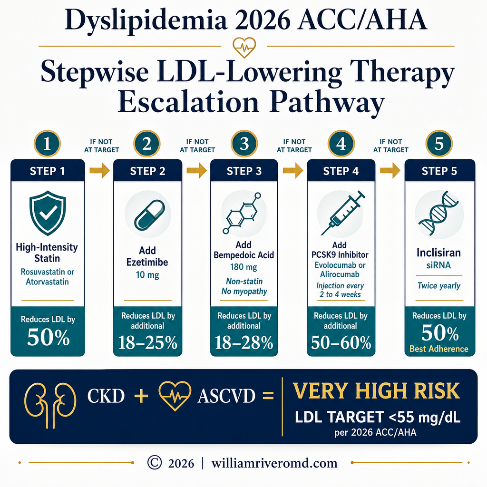
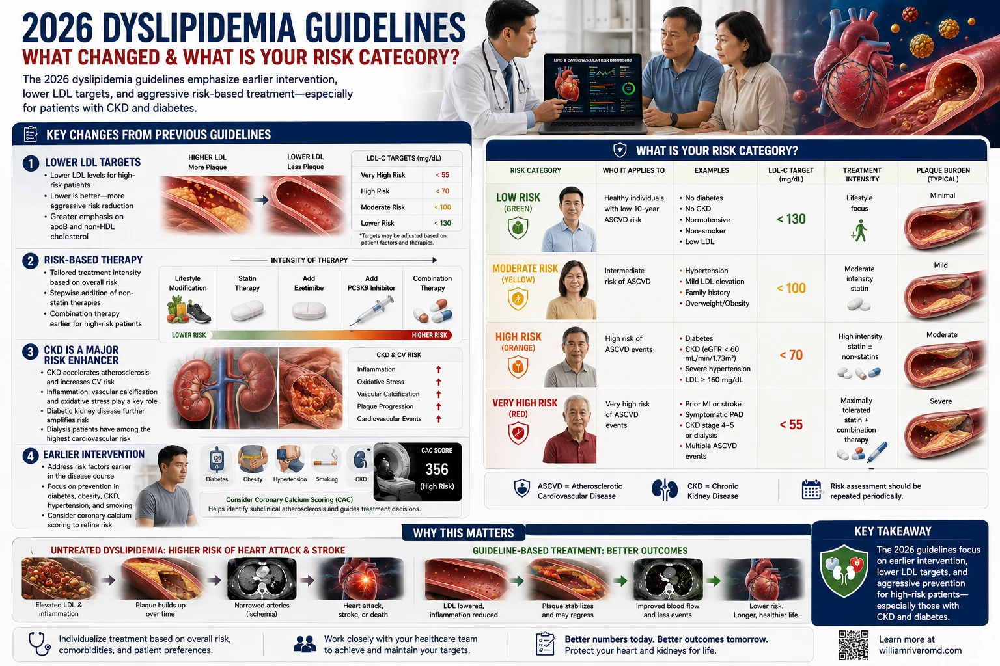
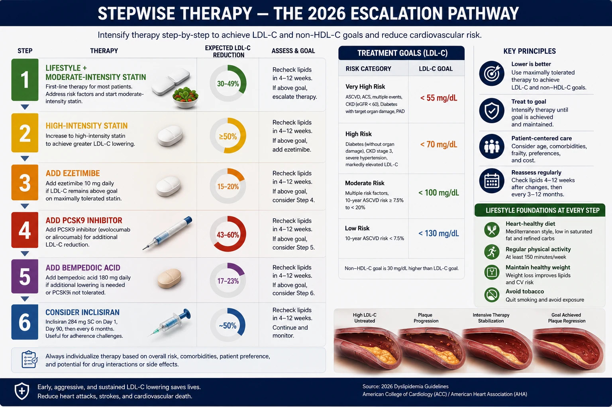
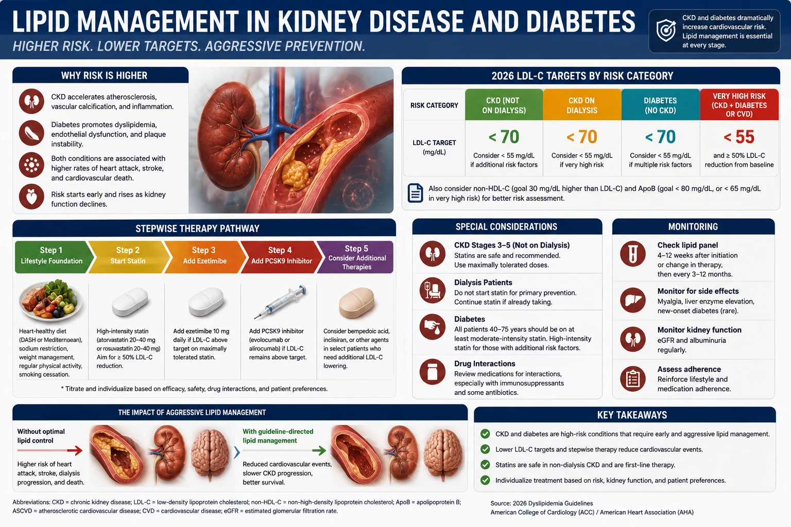
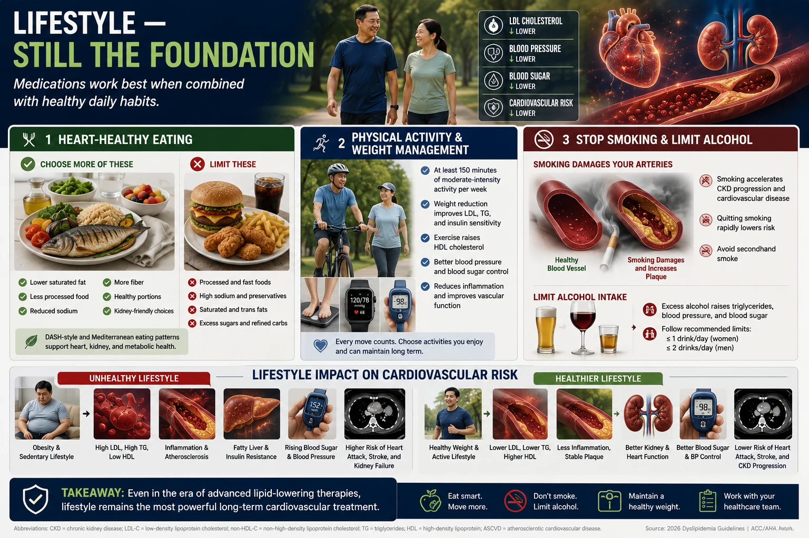

Key Changes From Previous GuidelinesMga Pangunahing Pagbabago Mula sa Nakaraang mga AlituntuninMga Yawe nga Pagbag-o Gikan sa Nakaaging mga AlituntuninDeng Pangunahing Pagbabago Mula sa Nakaradeng Alituntunin

Each step adds a drug with a different mechanism — never replace a lower step with a higher one. Maximum statin + ezetimibe must be tried before adding injectable PCSK9 inhibitors.Ang bawat hakbang ay nagdadagdag ng gamot na may ibang mekanismo — huwag kailanman palitan ang mas mababang hakbang ng mas mataas. Ang maximum statin + ezetimibe ay dapat subukan muna bago magdagdag ng injectable PCSK9 inhibitor.Ang matag lakang nagdugang og medisina nga adunay lain nga mekanismo — ayaw gayud ilisan ang mas ubos nga lakang sa mas taas. Ang maximum statin + ezetimibe kinahanglan sulayon una sa wala pa magdugang og injectable PCSK9 inhibitor.Ing bawat hakbang ya nagdadagdag nining gamut na may ibang mekanismo — eka kailanman palitan ing mas mababang hakbang ning mas mataas. Ing maximum statin + ezetimibe ya dapat subukan muna bago magdagdag ning injectable PCSK9 inhibinir.
The 2026 ACC/AHA guidelines represent the most significant update to cholesterol management in nearly a decade. The core message: lower LDL targets for high-risk patients, broader treatment indications, and a clear stepwise escalation pathway that now includes newer agents as standard of care — not last resort.Ang mga alituntunin ng ACC/AHA 2026 ay kumakatawan sa pinaka-makabuluhang update sa pamamahala ng kolesterol sa halos isang dekada. Ang pangunahing mensahe: mas mababang target ng LDL para sa mga high-risk na pasyente, mas malawak na mga indikasyon sa paggamot, at isang malinaw na stepwise escalation pathway na ngayon ay kinabibilangan ng mga bagong ahente bilang standard of care — hindi huling lunas.Ang mga alituntunin sa ACC/AHA 2026 nagrepresenta sa labing makahulogan nga update sa pagdumala sa kolesterol sa hapit usa ka dekada. Ang panguna nga mensahe: mas ubos nga mga target sa LDL alang sa mga high-risk nga pasyente, mas halapad nga mga indikasyon sa pagtambal, ug usa ka klaro nga stepwise escalation pathway nga karon naglakip sa mga bag-ong ahente ingon standard of care — dili katapusang lunas.Deng alituntunin ning ACC/AHA 2026 ya kumabangkî sa pinaka-makabuluhang update sa pamamahala ning kolesterol sa halos metung a dekada. Ing pangunahing mensahe: mas mababang target ning LDL para king deng high-risk na pasyente, mas malawak na deng indikasyon sa paggamut, at metung a malinaw na stepwise escalation pathway na ngayon ya kinabibilangan ning deng bagong ahente bilang standard of care — ali huling lunas.
Lower targets for very high riskMas mababang target para sa napakataas na panganibMas ubos nga mga target alang sa hilabihang taas nga risgoMas mababang target para king napakataas na panganib
LDL-C <55 mg/dL is now the standard target for very high-risk patients — those with established ASCVD, CKD Stage 3+, or diabetes with organ damage. This is a shift from the prior <70 mg/dL threshold.Ang LDL-C <55 mg/dL ay ngayon na ang standard na target para sa mga very high-risk na pasyente — ang mga may naitatag na ASCVD, CKD Stage 3+, o diabetes na may pinsala sa organo. Ito ay isang pagbabago mula sa dati na <70 mg/dL na threshold.Ang LDL-C <55 mg/dL karon mao na ang standard nga target alang sa mga very high-risk nga pasyente — ang adunay naitatag nga ASCVD, CKD Stage 3+, o diabetes nga adunay kadaot sa organo. Kini usa ka pagbag-o gikan sa dating <70 mg/dL nga threshold.Ing LDL-C <55 mg/dL ya ngayon na ing standard na target para king deng very high-risk na pasyente — deng may naitatag na ASCVD, CKD Stage 3+, o diabetes na may pinsala sa organo. Ini ya metung a pagbabago mula sa dati na <70 mg/dL na threshold.
PREVENT equations replace pooled cohortAng mga equation na PREVENT ang pumapalit sa pooled cohortAng mga equation nga PREVENT nagilis sa pooled cohortDeng equation na PREVENT ing pumapalit sa pooled cohort
The new AHA PREVENT cardiovascular risk calculator replaces the old Pooled Cohort Equations. PREVENT includes kidney function (eGFR) and metabolic factors, making it more accurate for Filipino patients with CKD and metabolic syndrome.Ang bagong AHA PREVENT cardiovascular risk calculator ay pumapalit sa lumang Pooled Cohort Equations. Ang PREVENT ay kinabibilangan ng tungkulin ng bato (eGFR) at mga metabolic factor, na ginagawa itong mas tumpak para sa mga Pilipinong pasyente na may CKD at metabolic syndrome.Ang bag-ong AHA PREVENT cardiovascular risk calculator nagilis sa daan nga Pooled Cohort Equations. Ang PREVENT naglakip sa tungkulin sa bato (eGFR) ug mga metabolic factor, nga naghimo niini nga mas tukma alang sa mga Pilipinong pasyente nga adunay CKD ug metabolic syndrome.Ing bagong AHA PREVENT cardiovascular risk calculator ya pumapalit sa lumang Pooled Cohort Equations. Ing PREVENT ya kinabibilangan ning tungkulin nining batu (eGFR) at deng metabolic factor, na ginagawa ining mas tumpak para king deng Pilipinong pasyente na may CKD at metabolic syndrome.
Treat DM, CKD, HIV regardless of LDLGamutin ang DM, CKD, HIV anuman ang LDLTambalon ang DM, CKD, HIV bisan unsa ang LDLGamutin ing DM, CKD, HIV anuman ing LDL
Adults aged 40–75 with diabetes, CKD Stage 3–4, or HIV are now treated with moderate-to-high intensity statin therapy regardless of baseline LDL level. These conditions themselves confer sufficient cardiovascular risk to mandate treatment.Ang mga matatandang may edad 40–75 na may diabetes, CKD Stage 3–4, o HIV ay ngayon ay tinatrato ng moderate-to-high intensity statin therapy anuman ang baseline LDL level. Ang mga kondisyong ito mismo ay nagbibigay ng sapat na cardiovascular risk upang mandato ang paggamot.Ang mga hamtong nga edad 40–75 nga adunay diabetes, CKD Stage 3–4, o HIV karon gitambal og moderate-to-high intensity statin therapy bisan unsa ang baseline LDL level. Kining mga kondisyon mismo naghatag og igo nga cardiovascular risk aron mandato ang pagtambal.Deng matatandang may edad 40–75 na may diabetes, CKD Stage 3–4, o HIV ya ngayon ya tinatrato ning moderate-to-high intensity statin therapy anuman ing baseline LDL level. Deng kondisyong ini mismo ya nagbibigay ning sapat na cardiovascular risk para mandato ing paggamut.
Lp(a) screening — once in a lifetimePagsusuri sa Lp(a) — minsan sa buhayPagsusi sa Lp(a) — usa ka beses sa kinabuhiPagsusuri sa Lp(a) — misan sa biye
Lipoprotein(a) must be measured at least once in every adult. An Lp(a) >50 mg/dL independently elevates cardiovascular risk and may reclassify borderline patients to a higher risk category warranting more aggressive treatment.Ang Lipoprotein(a) ay dapat masukat nang hindi bababa sa isang beses sa bawat matatanda. Ang Lp(a) >50 mg/dL ay independiyenteng nagpapataas ng cardiovascular risk at maaaring muling i-classify ang mga borderline na pasyente sa mas mataas na kategorya ng panganib na nangangailangan ng mas agresibong paggamot.Ang Lipoprotein(a) kinahanglan masukat labing menos usa ka beses sa matag hamtong. Ang Lp(a) >50 mg/dL independyenteng nagpataas sa cardiovascular risk ug mahimong muling ma-classify ang mga borderline nga pasyente sa mas taas nga kategorya sa risgo nga nanginahanglan og mas agresibong pagtambal.Ing Lipoprotein(a) ya dapat masukat nang ali bababa sa metung a beses king bawat matatanda. Ing Lp(a) >50 mg/dL ya independiyenteng nagpapataas ning cardiovascular risk at maaaring muling i-classify deng borderline na pasyente sa mas matas a kategorya ning panganib na nangangailangan ning mas agresibong paggamut.
Screen children aged 9–11Suriin ang mga batang may edad 9–11Susihon ang mga bata nga edad 9–11Suriin deng batang may edad 9–11
Universal lipid screening for all children between ages 9 and 11 is now recommended — and again at 17–21 years. Early detection of familial hypercholesterolemia allows treatment before irreversible atherosclerosis is established.Ang universal lipid screening para sa lahat ng mga bata sa pagitan ng edad 9 at 11 ay ngayon ay inirerekomenda — at muli sa 17–21 taon. Ang maagang pagtuklas ng familial hypercholesterolemia ay nagbibigay-daan sa paggamot bago maitatag ang hindi mababaligtarang atherosclerosis.Ang universal lipid screening alang sa tanan nga mga bata tali sa edad 9 ug 11 karon girekomendar — ug usab sa 17–21 ka tuig. Ang sayo nga pagtuklas sa familial hypercholesterolemia nagtugot sa pagtambal sa wala pa maitakda ang dili mapulihang atherosclerosis.Ing universal lipid screening para king lahat ning deng bata sa pagitan ning edad 9 at 11 ya ngayon ya inirerekomenda — at muli sa 17–21 banua. Ing maagang pagtuklas ning familial hypercholesterolemia ya nagbibigay-daan sa paggamut bago maitatag ing ali mababaligtarang atherosclerosis.
ApoB for residual riskApoB para sa natitirang panganibApoB alang sa nahibilin nga risgoApoB para king natitirang panganib
Apolipoprotein B is now recommended alongside LDL for patients with high triglycerides, diabetes, or metabolic syndrome — conditions where LDL underestimates true atherogenic particle burden.Ang Apolipoprotein B ay ngayon ay inirerekomenda kasabay ng LDL para sa mga pasyente na may mataas na triglycerides, diabetes, o metabolic syndrome — mga kondisyon kung saan ang LDL ay underestimates ng tunay na atherogenic particle burden.Ang Apolipoprotein B karon girekomendar kauban sa LDL alang sa mga pasyente nga adunay taas nga triglycerides, diabetes, o metabolic syndrome — mga kondisyon diin ang LDL nag-underestimate sa tinuod nga atherogenic particle burden.Ing Apolipoprotein B ya ngayon ya inirerekomenda kasabay ning LDL para king deng pasyente na may matas a triglycerides, diabetes, o metabolic syndrome — deng kondisyon nung saan ing LDL ya underestimates ning tunay na atherogenic particle burden.

What Is Your Risk Category?Ano ang Inyong Kategorya ng Panganib?Unsa ang Inyong Kategorya sa Risgo?Ano ing Inyong Kategorya ning Panganib?
Your LDL target depends on your cardiovascular risk category. The 2026 guidelines use the PREVENT calculator plus clinical risk enhancers to classify patients into four tiers.Ang inyong target na LDL ay depende sa inyong kategorya ng cardiovascular risk. Ang mga alituntunin ng 2026 ay gumagamit ng PREVENT calculator kasama ang mga klinikal na risk enhancer para i-classify ang mga pasyente sa apat na antas.Ang inyong target nga LDL nagdepende sa inyong kategorya sa cardiovascular risk. Ang mga alituntunin sa 2026 naggamit sa PREVENT calculator kauban ang mga klinikal nga risk enhancer aron i-classify ang mga pasyente sa upat ka antas.Ing inyong target na LDL ya depende king ka kategorya ning cardiovascular risk. Deng alituntunin ning 2026 ya gumagamit ning PREVENT calculator kasama deng klinikal na risk enhancer para i-classify deng pasyente sa apat na antas.
CKD Stage 3+ automatically = Very High RiskAng CKD Stage 3+ awtomatikong = Napakataas na PanganibAng CKD Stage 3+ awtomatiko = Hilabihang Taas nga RisgoIng CKD Stage 3+ awtomatikong = Napakataas na Panganib
Under 2026 guidelines, any patient with CKD Stage 3 or beyond (eGFR <60 mL/min/1.73m²) is automatically classified as very high cardiovascular risk — regardless of whether they have had a prior heart attack or stroke. This means an LDL target of <55 mg/dL applies, and failure to achieve this target on statin monotherapy mandates escalation to ezetimibe or a PCSK9 inhibitor.Sa ilalim ng mga alituntunin ng 2026, ang sinumang pasyente na may CKD Stage 3 o higit pa (eGFR <60 mL/min/1.73m²) ay awtomatikong na-classify bilang very high cardiovascular risk — anuman ang kung nagkaroon sila ng nakaraang atake sa puso o stroke. Nangangahulugan ito na ang target na LDL na <55 mg/dL ay naaangkop, at ang kabiguang makamit ang target na ito sa statin monotherapy ay nagmamandato ng escalation sa ezetimibe o isang PCSK9 inhibitor.Ubos sa mga alituntunin sa 2026, ang bisan unsang pasyente nga adunay CKD Stage 3 o labaw pa (eGFR <60 mL/min/1.73m²) awtomatiko nga na-classify ingon very high cardiovascular risk — bisan pa nakaagi sila sa atake sa kasingkasing o stroke. Nagpasabot kini nga ang target nga LDL nga <55 mg/dL nagamit, ug ang kabiguan sa pagkab-ot niining target sa statin monotherapy nagmandato sa escalation ngadto sa ezetimibe o usa ka PCSK9 inhibitor.Sa ilalim ning deng alituntunin ning 2026, ing sinumang pasyente na may CKD Stage 3 o higit pa (eGFR <60 mL/min/1.73m²) ya awtomatikong na-classify bilang very high cardiovascular risk — anuman ing nung nagkaroon sila ning nakaraang atake sa pusu o stroke. Nangangahulugan ini na ing target na LDL na <55 mg/dL ya naaangkop, at ing kabiguang makamit ing target na ini sa statin monotherapy ya nagmamandato ning escalation sa ezetimibe o metung a PCSK9 inhibinir.
Your Cholesterol Numbers — What to Aim ForAng Inyong mga Numero ng Kolesterol — Ano ang TargetAng Inyong mga Numero sa Kolesterol — Unsa ang TargetIng Inyong deng Numero ning Kolesterol — Ano ing Target
| ParameterParameterParameterParameter | General population targetTarget para sa pangkalahatang populasyonTarget alang sa kinatibuk-ang populasyonTarget para king pangkalahatang populasyon | Very high risk (CKD, ASCVD, DM+organ damage)Napakataas na panganib (CKD, ASCVD, DM+pinsala sa organo)Hilabihang taas nga risgo (CKD, ASCVD, DM+kadaot sa organo)Napakataas na panganib (CKD, ASCVD, DM+pinsala sa organo) | Why it mattersBakit ito mahalagaNgano nga kini importanteBakit ini mahalaga |
|---|---|---|---|
| LDL-C (primary target)LDL-C (pangunahing target)LDL-C (panguna nga target)LDL-C (pangunahing target) | <100 mg/dL | <55 mg/dL | Each 1 mmol/L (38.7 mg/dL) LDL reduction = 22% relative reduction in major cardiovascular eventsAng bawat 1 mmol/L (38.7 mg/dL) na pagbaba ng LDL = 22% na relatibong pagbaba sa mga pangunahing cardiovascular eventAng matag 1 mmol/L (38.7 mg/dL) nga pagkunhod sa LDL = 22% nga relatibong pagkunhod sa mga pangunahing cardiovascular eventIng bawat 1 mmol/L (38.7 mg/dL) na pagbaba ning LDL = 22% na relatibong pagbaba sa deng pangunahing cardiovascular event |
| Non-HDL-CNon-HDL-CNon-HDL-CNon-HDL-C | <130 mg/dL | <85 mg/dL | Captures all atherogenic particles including VLDL remnants — more accurate than LDL alone in high-TG statesKinukuha ang lahat ng atherogenic particle kasama ang mga VLDL remnant — mas tumpak kaysa sa LDL lamang sa mga estado ng mataas na TGGikuha ang tanan nga atherogenic particle lakip ang mga VLDL remnant — mas tukma kaysa sa LDL lamang sa mga estado sa taas nga TGKinukuha ing lahat ning atherogenic particle kasama deng VLDL remnant — mas tumpak kaysa sa LDL lamang sa deng estado ning matas a TG |
| ApoBApoBApoBApoB | <90 mg/dL | <65 mg/dL | Direct measure of atherogenic particle number. Preferred in DM, metabolic syndrome, high triglyceridesDirektang pagsukat ng bilang ng atherogenic particle. Ginusto sa DM, metabolic syndrome, mataas na triglyceridesDirektang pagsukat sa numero sa atherogenic particle. Gipalabi sa DM, metabolic syndrome, taas nga triglyceridesDirektang pagsukat ning bilang ning atherogenic particle. Ginusto sa DM, metabolic syndrome, matas a triglycerides |
| TriglyceridesTriglyceridesTriglyceridesTriglycerides | <150 mg/dL | <150 mg/dL | >500 mg/dL = pancreatitis risk requiring fibrate/omega-3. 150–499 = residual risk; address lifestyle>500 mg/dL = panganib ng pancreatitis na nangangailangan ng fibrate/omega-3. 150–499 = natitirang panganib; tugunan ang pamumuhay>500 mg/dL = risgo sa pancreatitis nga nanginahanglan og fibrate/omega-3. 150–499 = nahibilin nga risgo; tad-onga ang pamumuhay>500 mg/dL = panganib ning pancreatitis na nangangailangan ning fibrate/omega-3. 150–499 = natitirang panganib; tugunan ing pamumuhay |
| HDL-CHDL-CHDL-CHDL-C | >40 (M) / >50 (F) | No specific drug targetWalang tiyak na target sa gamotWalay tiyak nga target sa medisinaAlang tiyak na target king gamut | Cannot be raised meaningfully by medication; exercise and omega-3 help modestlyHindi mapapalaki nang makabuluhan sa pamamagitan ng gamot; ang ehersisyo at omega-3 ay nakakatulong nang katamtamanDili mapataas nga may kahulogan pinaagi sa medisina; ang ehersisyo ug omega-3 nagtabang nga katamtamanAli mapapalaki nang makabuluhan sa pamamagitan nining gamut; ing ehersisyo at omega-3 ya nakakatulong nang katamtaman |
| Lp(a)Lp(a)Lp(a)Lp(a) | <50 mg/dL | Measure once; no current approved lowering agent in PHSukatín nang isang beses; walang kasalukuyang aprubadong pampalabas sa PHSukta usa ka beses; walay kasamtamang aprubadong ahente sa pagpaubos sa PHSukatín nang metung a beses; alang kasalukuyang aprubadong pampalabas sa PH | >50 mg/dL = independent risk; escalate LDL target by one tier. Inclisiran reduces Lp(a) ~20%.>50 mg/dL = independiyenteng panganib; itaas ang LDL target ng isang antas. Ang Inclisiran ay nagpapababa ng Lp(a) ng ~20%.>50 mg/dL = independyenteng risgo; itaas ang LDL target og usa ka antas. Ang Inclisiran nagpababa sa Lp(a) og ~20%.>50 mg/dL = independiyenteng panganib; itaas ing LDL target ning metung a antas. Ing Inclisiran ya nagpapababa ning Lp(a) ning ~20%. |
Stepwise Therapy — The 2026 Escalation PathwayHakbang-Hakbang na Paggamot — Ang 2026 na Escalation PathwayLakang-Lakang nga Pagtambal — Ang 2026 Escalation PathwayHakbang-Hakbang na Paggamut — Ing 2026 na Escalation Pathway
The 2026 guidelines mandate a sequential, evidence-based escalation approach. Each step adds therapy if LDL target is not achieved — not as a last resort, but as standard protocol.Ang 2026 na mga alituntunin ay nag-uutos ng sunud-sunod, siyentipikong paraan ng pagdaragdag ng gamot. Ang bawat hakbang ay nagdaragdag ng therapy kung hindi pa naaabot ang target na LDL — hindi bilang huling paraan, kundi bilang pamantayang protokol.Ang 2026 nga mga giya nagsugo sa sunud-sunod, ebidensya-based nga paagi sa pagdugang sa tambal. Ang matag lakang nagdugang og therapy kon dili pa maabot ang target nga LDL — dili isip katapusang pagpili, kondili isip standard nga protokol.Ing 2026 na deng alituntunin ya nag-uutos ning sunud-sunod, siyentipikong paraan ning pagdaragdag nining gamut. Ing bawat hakbang ya nagdaragdag ning therapy nung ali pa naaabot ing target na LDL — ali bilang huling paraan, kundi bilang pamantayang protokol.

High-intensity statin — first and alwaysHigh-intensity statin — una at palagiHigh-intensity statin — una ug kanunayHigh-intensity statin — una at papirmi
Rosuvastatin 20–40 mg or Atorvastatin 40–80 mg daily. High-intensity statin reduces LDL by 50% or more. In the Philippines: Crestor (rosuvastatin) or Lipitor (atorvastatin). For patients intolerant to high-intensity doses, use the maximum tolerated statin dose as the base.Rosuvastatin 20–40 mg o Atorvastatin 40–80 mg araw-araw. Ang high-intensity statin ay nagbababa ng LDL ng 50% o higit pa. Sa Pilipinas: Crestor (rosuvastatin) o Lipitor (atorvastatin). Para sa mga pasyenteng hindi nagtatanggap ng high-intensity na dosis, gamitin ang pinakamataas na tinotoleratang dosis ng statin bilang batayan.Rosuvastatin 20–40 mg o Atorvastatin 40–80 mg matag adlaw. Ang high-intensity statin nagpaubos sa LDL og 50% o labaw pa. Sa Pilipinas: Crestor (rosuvastatin) o Lipitor (atorvastatin). Para sa mga pasyente nga dili makatiis sa high-intensity nga dosis, gamiton ang pinakataas nga gitolerahan nga dosis sa statin ingon base.Rosuvastatin 20–40 mg o Atorvastatin 40–80 mg aldo-aldo. Ing high-intensity statin ya nagbababa ning LDL ning 50% o higit pa. Sa Pilipinas: Crestor (rosuvastatin) o Lipinir (atorvastatin). Para king deng pasyenteng ali nagtatanggap ning high-intensity na dosis, gamitin ing pinakamatas a tinotoleratang dosis ning statin bilang batayan.
Add ezetimibe if LDL target not met UpdatedDagdagan ng ezetimibe kung hindi pa naaabot ang LDL target UpdatedIdugang ang ezetimibe kon dili pa maabot ang LDL target UpdatedDagdagan ning ezetimibe nung ali pa naaabot ing LDL target Updated
Ezetimibe 10 mg daily reduces LDL by an additional 18–25% by blocking intestinal cholesterol absorption. Rozuor (rosuvastatin + ezetimibe combination, Unilab) is the locally available fixed-dose combination. Note: use ezetimibe monotherapy separately when rosuvastatin is withheld — do not prescribe Rozuor when the statin component is being held.Ang ezetimibe 10 mg araw-araw ay nagbababa ng LDL ng karagdagang 18–25% sa pamamagitan ng pagharang sa pagsipsip ng kolesterol sa bituka. Ang Rozuor (kombinasyon ng rosuvastatin + ezetimibe, Unilab) ang lokal na available na fixed-dose combination. Tandaan: gamitin ang ezetimibe monotherapy nang hiwalay kapag itinanggal ang rosuvastatin — huwag mag-reseta ng Rozuor habang nakahold ang statin component.Ang ezetimibe 10 mg matag adlaw nagpaubos sa LDL og dugang nga 18–25% pinaagi sa pagpugong sa pagsuyop sa cholesterol sa tinai. Ang Rozuor (kombinasyon sa rosuvastatin + ezetimibe, Unilab) ang lokal nga available nga fixed-dose combination. Hinumdomi: gamiton ang ezetimibe monotherapy nga lahi kon giwithheld ang rosuvastatin — ayaw mag-prescribe og Rozuor samtang gihold ang statin component.Ing ezetimibe 10 mg aldo-aldo ya nagbababa ning LDL ning karagdagang 18–25% sa pamamagitan ning pagharang sa pagsipsip ning kolesterol sa bituka. Ing Rozuor (kombinasyon ning rosuvastatin + ezetimibe, Unilab) ing lokal na available na fixed-dose combination. Tandaan: gamitin ing ezetimibe monotherapy nang hialay nung itinanggal ing rosuvastatin — eka mag-reseta ning Rozuor habang nakahold ing statin component.
Add bempedoic acid if still not at target NewDagdagan ng bempedoic acid kung hindi pa rin naaabot ang target NewIdugang ang bempedoic acid kon dili pa gihapon maabot ang target NewDagdagan ning bempedoic acid nung ali pa rin naaabot ing target New
Bempedoic acid 180 mg daily is a new non-statin agent that inhibits cholesterol synthesis upstream of statins. It reduces LDL by 18–28% and is well-tolerated by patients who cannot take statins due to myopathy. It does not cause muscle side effects (it is not activated in muscle tissue).Ang bempedoic acid 180 mg araw-araw ay isang bagong non-statin na gamot na pumipigil sa synthesis ng kolesterol bago pa man ang statins. Nagbababa ito ng LDL ng 18–28% at matitiis ng mga pasyenteng hindi makainom ng statins dahil sa myopathy. Hindi ito nagdudulot ng mga epekto sa kalamnan (hindi ito ina-activate sa tissue ng kalamnan).Ang bempedoic acid 180 mg matag adlaw bag-ong non-statin nga himan nga nagpugong sa synthesis sa cholesterol sa unahan pa sa mga statin. Nagpaubos kini sa LDL og 18–28% ug gitolerahan sa mga pasyente nga dili makaabot og statin tungod sa myopathy. Dili kini naghimo og epekto sa kaunoran (dili kini gi-activate sa tissue sa kaunoran).Ing bempedoic acid 180 mg aldo-aldo ya metung a bagong non-statin na gamut na pumipigil sa synthesis ning kolesterol bago pa man ing statins. Nagbababa ini ning LDL ning 18–28% at matitiis ning deng pasyenteng ali makainom ning statins dahil king myopathy. Ali ini nagdudulot ning deng epekto sa kalamnan (ali ini ina-activate sa tissue ning kalamnan).
PCSK9 inhibitor for very high-risk patients Expanded indicationPCSK9 inhibitor para sa mga pasyenteng very high-risk Expanded indicationPCSK9 inhibitor alang sa mga very high-risk nga pasyente Expanded indicationPCSK9 inhibinir para king deng pasyenteng very high-risk Expanded indication
Evolocumab (Repatha) or alirocumab (Praluent) reduce LDL by 50–60% on top of maximum oral therapy. Administered by injection every 2–4 weeks. 2026 guidelines expand their use to all very high-risk patients not achieving <55 mg/dL on statin + ezetimibe — no longer restricted to familial hypercholesterolemia only.Ang evolocumab (Repatha) o alirocumab (Praluent) ay nagbababa ng LDL ng 50–60% sa ibabaw ng pinakamataas na oral therapy. Ibinibigay sa pamamagitan ng iniksyon tuwing 2–4 linggo. Ang 2026 na mga alituntunin ay nagpapalawak ng kanilang paggamit sa lahat ng very high-risk na pasyenteng hindi umaabot sa <55 mg/dL sa statin + ezetimibe — hindi na limitado sa familial hypercholesterolemia lamang.Ang evolocumab (Repatha) o alirocumab (Praluent) nagpaubos sa LDL og 50–60% ibabaw sa pinakataas nga oral therapy. Gihatag pinaagi sa iniksyon matag 2–4 ka semana. Ang 2026 nga mga giya nagpalapad sa ilang paggamit ngadto sa tanan nga very high-risk nga pasyente nga dili makaabot sa <55 mg/dL sa statin + ezetimibe — dili na limitado sa familial hypercholesterolemia lamang.Ing evolocumab (Repatha) o alirocumab (Praluent) ya nagbababa ning LDL ning 50–60% sa ibabaw ning pinakamatas a oral therapy. Ibinibigay sa pamamagitan ning iniksyon tuwing 2–4 lutu. Ing 2026 na deng alituntunin ya nagpapalawak ning kanilang paggamit king amin ning very high-risk na pasyenteng ali umaabot sa <55 mg/dL sa statin + ezetimibe — ali na limitado sa familial hypercholesterolemia lamang.
Inclisiran for sustained LDL reduction New classInclisiran para sa tuluy-tuloy na pagbaba ng LDL New classInclisiran alang sa padayon nga pagpaubos sa LDL New classInclisiran para king tuluy-tuloy na pagbaba ning LDL New class
Inclisiran is an siRNA agent that inhibits PCSK9 synthesis in the liver. Administered by injection only twice per year (after initial doses at 0 and 3 months). Provides similar LDL reduction to PCSK9 inhibitors with dramatically improved adherence. Particularly useful for patients who struggle with monthly injection schedules.Ang inclisiran ay isang siRNA agent na pumipigil sa synthesis ng PCSK9 sa atay. Ibinibigay sa pamamagitan ng iniksyon dalawang beses lamang sa isang taon (pagkatapos ng mga paunang dosis sa buwan 0 at 3). Nagbibigay ng katulad na pagbaba ng LDL gaya ng PCSK9 inhibitors ngunit may malaking pagpapabuti sa pagsunod ng pasyente. Partikular na kapaki-pakinabang para sa mga pasyenteng nahihirapan sa buwanang iskedyul ng iniksyon.Ang inclisiran usa ka siRNA agent nga nagpugong sa synthesis sa PCSK9 sa atay. Gihatag pinaagi sa iniksyon duha ka beses lamang sa usa ka tuig (human sa unang mga dosis sa buwan 0 ug 3). Naghatag og susama nga pagpaubos sa LDL sama sa PCSK9 inhibitors apan may dako kaayo nga pagpabuti sa pagsunod sa tambal. Espesyal nga mapuslanon alang sa mga pasyente nga naglisod sa buwan-buwan nga iskedyul sa iniksyon.Ing inclisiran ya metung a siRNA agent na pumipigil sa synthesis ning PCSK9 sa atay. Ibinibigay sa pamamagitan ning iniksyon dalawang beses lamang sa metung a banua (kapabanuan ning deng paunang dosis sa bulan 0 at 3). Nagbibigay ning katulad na pagbaba ning LDL gaya ning PCSK9 inhibinirs ngarud may malda a pagpapabuti sa pagsunod ning pasyente. Partikular na kapaki-pakinabang para king deng pasyenteng nahihirapan sa bulanang iskedyul ning iniksyon.
Beyond LDL — Addressing Residual Cardiovascular RiskHigit Pa sa LDL — Pagtugon sa Natitirang Panganib sa PusoLabaw Pa sa LDL — Pagtubag sa Nahibilin nga Peligro sa KasingkasingHigit Pa sa LDL — Pagtugon sa Natitirang Panganib sa Pusu
Even with LDL well-controlled, many patients remain at elevated risk due to elevated triglycerides, low HDL, inflammation, and Lp(a). The 2026 guidelines formally address these.Kahit kontrolado na ang LDL, maraming pasyente ang nananatiling nasa mataas na panganib dahil sa mataas na triglycerides, mababang HDL, pamamaga, at Lp(a). Ang 2026 na mga alituntunin ay pormal na tumutugon sa mga ito.Bisan kontrolado na ang LDL, daghan pa nga mga pasyente ang nagpabilin sa taas nga peligro tungod sa taas nga triglycerides, ubos nga HDL, pamamaga, ug Lp(a). Ang 2026 nga mga giya pormal nga nagtubag niini.Kahit kontrolado na ing LDL, dacal a pasyente ing nananatiling nasa matas a panganib dahil king matas a triglycerides, mababang HDL, pamamaga, at Lp(a). Ing 2026 na deng alituntunin ya pormal na tumutugon sa deng ini.
High triglycerides — Omega-3 and fibratesMataas na triglycerides — Omega-3 at fibratesTaas nga triglycerides — Omega-3 ug fibratesMataas na triglycerides — Omega-3 at fibrates
Triglycerides 200–499 mg/dL: lifestyle modification first (reduce refined carbs, alcohol, sugar). If >500 mg/dL: icosapent ethyl (prescription-dose omega-3) or fenofibrate to reduce pancreatitis risk. Omacor (omega-3 acid ethyl esters) is the locally registered agent for hypertriglyceridemia.Triglycerides 200–499 mg/dL: pagbabago ng pamumuhay muna (bawasan ang refined carbs, alkohol, asukal). Kung >500 mg/dL: icosapent ethyl (prescription-dose omega-3) o fenofibrate para mabawasan ang panganib ng pancreatitis. Ang Omacor (omega-3 acid ethyl esters) ang lokal na rehistradong gamot para sa hypertriglyceridemia.Triglycerides 200–499 mg/dL: pagbag-o sa pamong kinabuhi una (pagkunhod sa refined carbs, alkohol, asukal). Kon >500 mg/dL: icosapent ethyl (prescription-dose omega-3) o fenofibrate aron maminusan ang peligro sa pancreatitis. Ang Omacor (omega-3 acid ethyl esters) ang lokal nga rehistradong himan alang sa hypertriglyceridemia.Triglycerides 200–499 mg/dL: pagbabago ning pamumuhay muna (bawasan ing refined carbs, alkohol, asukal). Nung >500 mg/dL: icosapent ethyl (prescription-dose omega-3) o fenofibrate para mabawasan ing panganib ning pancreatitis. Ing Omacor (omega-3 acid ethyl esters) ing lokal na rehistradoning gamut para king hypertriglyceridemia.
High hsCRP — statin benefit even at low LDLMataas na hsCRP — benepisyo ng statin kahit mababa ang LDLTaas nga hsCRP — benepisyo sa statin bisan ubos ang LDLMataas na hsCRP — benepisyo ning statin kahit mababa ing LDL
Elevated high-sensitivity CRP (>2 mg/L) identifies patients with inflammatory residual risk. The JUPITER trial showed rosuvastatin dramatically reduces events in patients with normal LDL but elevated hsCRP. Colchicine 0.5 mg daily (COLCOT, LoDoCo2 trials) is now an evidence-based anti-inflammatory adjunct for post-MI patients.Ang mataas na high-sensitivity CRP (>2 mg/L) ay nagtatukoy ng mga pasyenteng may natitirang panganib dahil sa pamamaga. Ipinakita ng JUPITER trial na ang rosuvastatin ay lubos na nagbabawas ng mga pangyayari sa mga pasyenteng may normal na LDL ngunit mataas na hsCRP. Ang colchicine 0.5 mg araw-araw (COLCOT, LoDoCo2 trials) ay isang ebidensya-based na anti-inflammatory adjunct para sa mga pasyenteng post-MI.Ang taas nga high-sensitivity CRP (>2 mg/L) nagila sa mga pasyente nga adunay nahibilin nga peligro tungod sa pamamaga. Gipakita sa JUPITER trial nga ang rosuvastatin dako kaayo nga nagpaubos sa mga panghitabo sa mga pasyente nga adunay normal nga LDL apan taas nga hsCRP. Ang colchicine 0.5 mg matag adlaw (COLCOT, LoDoCo2 trials) karon usa na ka ebidensya-based nga anti-inflammatory adjunct alang sa mga pasyenteng post-MI.Ing matas a high-sensitivity CRP (>2 mg/L) ya nagtatukoy ning deng pasyenteng may natitirang panganib dahil king pamamaga. Ipinakita ning JUPITER trial na ing rosuvastatin ya lubos na nagbabawas ning deng pangyayari sa deng pasyenteng may normal na LDL ngarud matas a hsCRP. Ing colchicine 0.5 mg aldo-aldo (COLCOT, LoDoCo2 trials) ya metung a ebidensya-based na anti-inflammatory adjunct para king deng pasyenteng post-MI.
ApoB — the hidden risk in Filipino patientsApoB — ang nakatagong panganib sa mga pasyenteng PilipinoApoB — ang natagoan nga peligro sa mga pasyenteng PilipinoApoB — ing nakatagong panganib sa deng pasyenteng Pilipino
Many Filipino patients with metabolic syndrome, diabetes, or CKD have normal or borderline LDL-C but elevated ApoB — meaning they have many small, dense LDL particles that are highly atherogenic. LDL-C measurement misses this. The 2026 guidelines recommend measuring ApoB in all patients with TG >200, diabetes, or metabolic syndrome. Target ApoB <65 mg/dL for very high-risk patients.Maraming pasyenteng Pilipino na may metabolic syndrome, diabetes, o CKD ang may normal o borderline na LDL-C ngunit mataas na ApoB — ibig sabihin ay marami silang maliliit, makapal na LDL particles na lubos na atherogenic. Hindi ito nakukuha ng pagsukat ng LDL-C. Inirerekomenda ng 2026 na mga alituntunin ang pagsukat ng ApoB sa lahat ng pasyenteng may TG >200, diabetes, o metabolic syndrome. Target na ApoB <65 mg/dL para sa very high-risk na mga pasyente.Daghan nga mga pasyenteng Pilipino nga adunay metabolic syndrome, diabetes, o CKD adunay normal o borderline nga LDL-C apan taas nga ApoB — nagpasabot nga daghan silag gagmay, haw-as nga LDL particles nga labaw kaayong atherogenic. Ang pagsukat sa LDL-C nagsayop niini. Girekomenda sa 2026 nga mga giya ang pagsukat sa ApoB sa tanan nga pasyente nga adunay TG >200, diabetes, o metabolic syndrome. Target nga ApoB <65 mg/dL alang sa very high-risk nga mga pasyente.Maraming pasyenteng Pilipino na may metabolic syndrome, diabetes, o CKD ing may normal o borderline na LDL-C ngarud matas a ApoB — ibig sabihin ya marami silang maliliit, makapal na LDL particles na lubos na atherogenic. Ali ini nakukuha ning pagsukat ning LDL-C. Inirerekomenda ning 2026 na deng alituntunin ing pagsukat ning ApoB king amin ning pasyenteng may TG >200, diabetes, o metabolic syndrome. Target na ApoB <65 mg/dL para king very high-risk na deng pasyente.
Lipid Management in Kidney Disease and DiabetesPamamahala ng Lipid sa Sakit sa Bato at DiabetesPagdumala sa Lipid sa Sakit sa Bato ug DiabetesPamamahala ning Lipid sa Sakit sa Batu at Diabetes

| Patient GroupGrupo ng PasyenteGrupo sa PasyenteGrupo ning Pasyente | 2026 RecommendationRekomendasyon ng 2026Rekomendasyon sa 2026Rekomendasyon ning 2026 | Philippine-available agentAvailable na gamot sa PilipinasAvailable nga himan sa PilipinasAvailable na gamut king Pilipinas |
|---|---|---|
| CKD Stage 3–4 (eGFR 15–59)CKD Stage 3–4 (eGFR 15–59)CKD Stage 3–4 (eGFR 15–59)CKD Stage 3–4 (eGFR 15–59) | High-intensity statin regardless of LDL. Target LDL <55 mg/dL. Add ezetimibe if not at goal.High-intensity statin anuman ang LDL. Target na LDL <55 mg/dL. Dagdagan ng ezetimibe kung hindi pa naabot ang layunin.High-intensity statin bisan unsa pa ang LDL. Target nga LDL <55 mg/dL. Idugang ang ezetimibe kon dili pa maabot ang layunin.High-intensity statin anuman ing LDL. Target na LDL <55 mg/dL. Dagdagan ning ezetimibe nung ali pa naabot ing layunin. | Rosuvastatin 20 mg (preferred — less renal metabolism than atorvastatin) + Ezetimibe 10 mg or RozuorRosuvastatin 20 mg (mas pinipili — mas kaunting renal metabolism kaysa atorvastatin) + Ezetimibe 10 mg o RozuorRosuvastatin 20 mg (mas gusto — menos renal metabolism kay sa atorvastatin) + Ezetimibe 10 mg o RozuorRosuvastatin 20 mg (mas pinipili — mas kaunting renal metabolism kaysa atorvastatin) + Ezetimibe 10 mg o Rozuor |
| CKD Stage 5 / DialysisCKD Stage 5 / DialysisCKD Stage 5 / DialysisCKD Stage 5 / Dialysis | Do not initiate statin for the first time in dialysis patients without prior ASCVD — evidence of benefit is weak. Continue statin if already established.Huwag simulan ang statin sa unang pagkakataon sa mga pasyenteng nasa dialysis na walang naunang ASCVD — mahina ang ebidensya ng benepisyo. Ituloy ang statin kung naitayo na ito.Ayaw sugdi ang statin sa unang higayon sa mga pasyente sa dialysis nga walay naunang ASCVD — huyang ang ebidensya sa benepisyo. Ituloy ang statin kon natukod na kini.Eka simulan ing statin sa unang pagkakabanua sa deng pasyenteng nasa dialysis na alang naunang ASCVD — mahina ing ebidensya ning benepisyo. Ituloy ing statin nung naiita na ini. | Continue existing statin at dialysis initiation. Do not newly start unless indicated by ASCVD history.Ituloy ang kasalukuyang statin sa simula ng dialysis. Huwag magsimula ng bago maliban kung ipinahiwatig ng kasaysayan ng ASCVD.Ituloy ang naggamit nga statin sa pagsugod sa dialysis. Ayaw magsugod og bag-o gawas kon gipakita sa kasaysayan sa ASCVD.Ituloy ing kasalukuyang statin sa simula ning dialysis. Eka magsimula ning bago maliban nung ipinahiwatig ning kasaysayan ning ASCVD. |
| Post-kidney transplantPagkatapos ng kidney transplantHuman sa kidney transplantKapabanuan nining kidney transplant | Moderate-to-high intensity statin. Avoid simvastatin — significant drug interaction with calcineurin inhibitors (cyclosporine, tacrolimus).Moderate-to-high intensity statin. Iwasan ang simvastatin — malaking drug interaction sa calcineurin inhibitors (cyclosporine, tacrolimus).Moderate-to-high intensity statin. Likayi ang simvastatin — dako nga drug interaction sa calcineurin inhibitors (cyclosporine, tacrolimus).Moderate-to-high intensity statin. Iwasan ing simvastatin — malda a drug interaction sa calcineurin inhibinirs (cyclosporine, tacrolimus). | Pravastatin or rosuvastatin (lower interaction risk). Avoid simvastatin and lovastatin.Pravastatin o rosuvastatin (mas mababang panganib ng interaction). Iwasan ang simvastatin at lovastatin.Pravastatin o rosuvastatin (ubos nga peligro sa interaction). Likayi ang simvastatin ug lovastatin.Pravastatin o rosuvastatin (mas mababang panganib ning interaction). Iwasan ing simvastatin at lovastatin. |
| Type 2 DM aged 40–75Type 2 DM na may edad 40–75Type 2 DM nga edad 40–75Type 2 DM na may edad 40–75 | Treat with moderate-to-high intensity statin regardless of LDL. LDL <70 (no organ damage) or <55 (with CKD/ASCVD/organ damage).Gamutin ng moderate-to-high intensity statin anuman ang LDL. LDL <70 (walang organ damage) o <55 (na may CKD/ASCVD/organ damage).Tambalan og moderate-to-high intensity statin bisan unsa pa ang LDL. LDL <70 (walay organ damage) o <55 (adunay CKD/ASCVD/organ damage).Gamutin ning moderate-to-high intensity statin anuman ing LDL. LDL <70 (alang organ damage) o <55 (na may CKD/ASCVD/organ damage). | Rosuvastatin 10–20 mg + Ezetimibe as needed. Add PCSK9 inhibitor for very high-risk DM.Rosuvastatin 10–20 mg + Ezetimibe kung kinakailangan. Dagdagan ng PCSK9 inhibitor para sa very high-risk na DM.Rosuvastatin 10–20 mg + Ezetimibe kon gikinahanglan. Idugang ang PCSK9 inhibitor alang sa very high-risk nga DM.Rosuvastatin 10–20 mg + Ezetimibe nung kinakailangan. Dagdagan ning PCSK9 inhibinir para king very high-risk na DM. |
| Statin intolerance (myopathy)Hindi pagtitiis sa statin (myopathy)Dili pagtiis sa statin (myopathy)Ali pagtitiis sa statin (myopathy) | Switch to alternative statin at lower dose. Try every-other-day dosing. Add bempedoic acid + ezetimibe as statin-free regimen.Lumipat sa alternatibong statin sa mas mababang dosis. Subukan ang dosing tuwing ibang araw. Dagdagan ng bempedoic acid + ezetimibe bilang statin-free regimen.Mobalhin sa alternatibong statin sa mas ubos nga dosis. Sulayi ang dosing matag laing adlaw. Idugang ang bempedoic acid + ezetimibe ingon statin-free regimen.Lumipat sa alternatibong statin sa mas mababang dosis. Subukan ing dosing tuwing ibaning aldo. Dagdagan ning bempedoic acid + ezetimibe bilang statin-free regimen. | Bempedoic acid (Nexletol) — check local availability. Ezetimibe monotherapy as bridge.Bempedoic acid (Nexletol) — tingnan ang lokal na availability. Ezetimibe monotherapy bilang pansamantalang lunas.Bempedoic acid (Nexletol) — tan-awa ang lokal nga availability. Ezetimibe monotherapy ingon bridge.Bempedoic acid (Nexletol) — tingnan ing lokal na availability. Ezetimibe monotherapy bilang pansamantalang lunas. |
Rozuor — important prescribing ruleRozuor — mahalagang tuntunin sa pagresetaRozuor — importante nga lagda sa pag-prescribeRozuor — mahalagang tuntunin sa pagreseta
Rozuor (rosuvastatin + ezetimibe fixed combination by Unilab) must NOT be prescribed when the rosuvastatin component is being withheld or held (e.g., during acute illness, pre-procedure, or statin intolerance workup). In these situations, prescribe ezetimibe 10 mg as a separate standalone tablet — not Rozuor.Ang Rozuor (rosuvastatin + ezetimibe fixed combination ng Unilab) ay HINDI dapat iresetang kapag ang rosuvastatin component ay itinanggal o nakahold (hal., sa panahon ng matinding sakit, bago ang pamamaraan, o pagsisiyasat ng statin intolerance). Sa mga sitwasyong ito, mag-reseta ng ezetimibe 10 mg bilang hiwalay na tableta — hindi Rozuor.Ang Rozuor (rosuvastatin + ezetimibe fixed combination sa Unilab) DILI dapat i-prescribe kon ang rosuvastatin component giwithheld o gihold (hal., sa panahon sa grabe nga sakit, wala pa sa prosidyur, o pagsusi sa statin intolerance). Sa niining mga sitwasyon, mag-prescribe og ezetimibe 10 mg isip lahi nga tableta — dili Rozuor.Ing Rozuor (rosuvastatin + ezetimibe fixed combination ning Unilab) ya HINDI dapat iresetang nung ing rosuvastatin component ya itinanggal o nakahold (hal., sa panahon ning matindining sakit, bago ing pamamaraan, o pagsiyasat ning statin intolerance). Sa deng sitwasyong ini, mag-reseta ning ezetimibe 10 mg bilang hialay na tableta — ali Rozuor.
Lifestyle — Still the FoundationPamumuhay — Nananatiling PundasyonEstilo sa Kinabuhi — Nagpabilin nga PundasyonPamumuhay — Nananatiling Pundasyon

Dietary fat quality over quantityKalidad ng taba sa pagkain kaysa damiKalidad sa taba sa pagkaon kaysa kadaghanKalidad ning taba king pamangan kaysa dami
Replace saturated fats (animal fat, coconut oil, processed foods) with unsaturated fats (fish, olive oil, avocado, nuts in moderation). A 10% reduction in saturated fat intake lowers LDL by 8–10 mg/dL. Trans fats (margarine, commercially fried foods) must be eliminated entirely.Palitan ang mga saturated fats (taba ng hayop, coconut oil, processed foods) ng mga unsaturated fats (isda, olive oil, avocado, mani nang katamtaman). Ang 10% na pagbabawas sa saturated fat intake ay nagpapababa ng LDL ng 8–10 mg/dL. Ang mga trans fats (margarine, commercially fried foods) ay dapat na ganap na alisin.Ilisan ang mga saturated fats (taba sa hayop, coconut oil, processed foods) og mga unsaturated fats (isda, olive oil, avocado, mani sa katinuoran). Ang 10% nga pagkunhod sa saturated fat intake nagpaubos sa LDL og 8–10 mg/dL. Ang mga trans fats (margarine, commercially fried foods) kinahanglan hingpit nga wagtangon.Palitan deng saturated fats (taba ning hayop, coconut oil, processed foods) ning deng unsaturated fats (isda, olive oil, avocado, mani nang katamtaman). Ing 10% na pagbabawas sa saturated fat intake ya nagpapababa ning LDL ning 8–10 mg/dL. Deng trans fats (margarine, commercially fried foods) ya dapat na ganap na alisin.
Soluble fiber — the underused toolSoluble fiber — ang hindi gaanong ginagamit na kasangkapanSoluble fiber — ang dili kaayo gigamit nga himanSoluble fiber — ing ali gaanong ginagamit na kasangkapan
Soluble fiber (psyllium husk, oatmeal, mongo beans, okra) binds bile acids in the intestine, forcing the liver to use cholesterol to make more bile — effectively lowering LDL by 5–10 mg/dL. Psyllium husk 5–10 g daily is a safe, cost-effective, locally available adjunct.Ang soluble fiber (psyllium husk, oatmeal, mongo, okra) ay nagbubuklod ng mga bile acids sa bituka, na pinipilit ang atay na gumamit ng kolesterol para gumawa ng mas maraming bile — epektibong nagpapababa ng LDL ng 5–10 mg/dL. Ang psyllium husk 5–10 g araw-araw ay isang ligtas, cost-effective, at lokal na available na adjunct.Ang soluble fiber (psyllium husk, oatmeal, mongo, okra) nagbugkos sa mga bile acids sa tinai, nagpugos sa atay nga gamiton ang cholesterol aron makahimo og dugang nga bile — epektibong nagpaubos sa LDL og 5–10 mg/dL. Ang psyllium husk 5–10 g matag adlaw usa ka luwas, cost-effective, ug lokal nga available nga adjunct.Ing soluble fiber (psyllium husk, oatmeal, mongo, okra) ya nagbubuklod ning deng bile acids sa bituka, na pinipilit ing atay na gumamit ning kolesterol para gumawa ning mas dacal a bile — epektibong nagpapababa ning LDL ning 5–10 mg/dL. Ing psyllium husk 5–10 g aldo-aldo ya metung a ligtas, cost-effective, at lokal na available na adjunct.
Reduce simple carbohydrates for TGBawasan ang simpleng carbohydrates para sa TGPagkunhod sa simpleng carbohydrates alang sa TGBawasan ing simpleng carbohydrates para king TG
High-glycemic foods (white sugar, softdrinks, white bread, instant noodles) drive hypertriglyceridemia and raise VLDL. Replacing refined carbs with complex carbohydrates and fiber significantly lowers triglycerides — often more effectively than fibrate medications.Ang mga pagkaing mataas ang glycemic (puting asukal, softdrinks, puting tinapay, instant noodles) ay nagdudulot ng hypertriglyceridemia at nagpapataas ng VLDL. Ang pagpapalit ng refined carbs ng complex carbohydrates at fiber ay lubos na nagpapababa ng triglycerides — madalas na mas epektibo kaysa sa mga gamot na fibrate.Ang mga pagkaon nga taas ang glycemic (puting asukal, softdrinks, puting tinapay, instant noodles) nagdala sa hypertriglyceridemia ug nagpataas sa VLDL. Ang pagpuli sa refined carbs og complex carbohydrates ug fiber dako kaayong nagpaubos sa triglycerides — kasagaran mas epektibo pa kay sa mga fibrate nga tambal.Dening pamangang mataas ing glycemic (puting asukal, softdrinks, puting tinapay, instant noodles) ya nagdudulot ning hypertriglyceridemia at nagpapataas ning VLDL. Ing pagpapalit ning refined carbs ning complex carbohydrates at fiber ya lubos na nagpapababa ning triglycerides — madalas na mas epektibo kaysa sa dening gamut na fibrate.
Exercise — 150 minutes per weekEhersisyo — 150 minuto bawat linggoEhersisyo — 150 minuto matag semanaEhersisyo — 150 minuto bawat lutu
Aerobic exercise raises HDL by 3–5 mg/dL and lowers triglycerides by 20–30%. Resistance training adds modest additional LDL reduction. The cardiovascular benefit of exercise extends well beyond its lipid effects — it improves endothelial function, blood pressure, insulin sensitivity, and inflammation simultaneously.Ang aerobic exercise ay nagpapataas ng HDL ng 3–5 mg/dL at nagpapababa ng triglycerides ng 20–30%. Ang resistance training ay nagdaragdag ng katamtamang karagdagang pagbaba ng LDL. Ang benepisyo ng ehersisyo sa puso ay higit pa sa mga epekto nito sa lipid — pinapabuti nito ang endothelial function, presyon ng dugo, sensitivity sa insulin, at pamamaga nang sabay-sabay.Ang aerobic exercise nagpataas sa HDL og 3–5 mg/dL ug nagpaubos sa triglycerides og 20–30%. Ang resistance training nagdugang og katinuoran nga dugang nga pagpaubos sa LDL. Ang benepisyo sa ehersisyo sa kasingkasing molapas pa sa iyang mga epekto sa lipid — nagpauswag kini sa endothelial function, presyon sa dugo, sensitivity sa insulin, ug pamamaga sa dungan.Ing aerobic exercise ya nagpapataas ning HDL ning 3–5 mg/dL at nagpapababa ning triglycerides ning 20–30%. Ing resistance training ya nagdaragdag ning katamtamang karagdagang pagbaba ning LDL. Ing benepisyo ning ehersisyo sa pusu ya higit pa sa deng epekto nini sa lipid — pinapabuti nini ing endothelial function, presyon nining daya, sensitivity sa insulin, at pamamaga nang sabay-sabay.
Stop smokingItigil ang paninigarilyoHunong sa pagsigarilyoItigil ing paninigarilyo
Smoking lowers HDL, oxidizes LDL (making it more atherogenic), damages endothelium, and promotes platelet aggregation. Smoking cessation improves HDL by 5–10 mg/dL within months and dramatically reduces cardiovascular risk — more than any single medication.Ang paninigarilyo ay nagpapababa ng HDL, nag-o-oxidize ng LDL (ginagawa itong mas atherogenic), nakakasama sa endothelium, at nagtataguyod ng platelet aggregation. Ang pagtigil sa paninigarilyo ay nagpapabuti ng HDL ng 5–10 mg/dL sa loob ng ilang buwan at lubos na nagpapababa ng panganib sa puso — higit pa sa anumang isang gamot.Ang pagsigarilyo nagpaubos sa HDL, nag-oxidize sa LDL (nagpadako niini nga mas atherogenic), nakadaot sa endothelium, ug nagpalambo sa platelet aggregation. Ang paghinay sa pagsigarilyo nagpauswag sa HDL og 5–10 mg/dL sulod sa pipila ka bulan ug dako kaayong nagpaubos sa peligro sa kasingkasing — labaw pa sa bisan unsang usa ka tambal.Ing paninigarilyo ya nagpapababa ning HDL, nag-o-oxidize ning LDL (ginagawa ining mas atherogenic), nakakasama sa endothelium, at nagtataguyod ning platelet aggregation. Ing pagtigil sa paninigarilyo ya nagpapabuti ning HDL ning 5–10 mg/dL sa loob ning ilaning bulan at lubos na nagpapababa ning panganib sa pusu — higit pa sa anumang metung a gamut.
Weight managementPamamahala ng timbangPagdumala sa timbangPamamahala ning timbang
A 5–10% reduction in body weight reduces TG by 20%, raises HDL by 2–3 mg/dL, and lowers LDL by 5–10 mg/dL. GLP-1 receptor agonists (semaglutide) now provide medically meaningful weight loss with simultaneous cardiovascular and renal protection.Ang 5–10% na pagbabawas sa timbang ng katawan ay nagpapababa ng TG ng 20%, nagpapataas ng HDL ng 2–3 mg/dL, at nagpapababa ng LDL ng 5–10 mg/dL. Ang mga GLP-1 receptor agonists (semaglutide) ay nagbibigay na ngayon ng medikal na makabuluhang pagbaba ng timbang na may sabay na proteksyon sa puso at bato.Ang 5–10% nga pagkunhod sa timbang sa lawas nagpaubos sa TG og 20%, nagpataas sa HDL og 2–3 mg/dL, ug nagpaubos sa LDL og 5–10 mg/dL. Ang mga GLP-1 receptor agonists (semaglutide) karon naghatag og medikal nga makasabut nga pagkunhod sa timbang uban sa dungang proteksyon sa kasingkasing ug bato.Ing 5–10% na pagbabawas sa timbang nining bangkî ya nagpapababa ning TG ning 20%, nagpapataas ning HDL ning 2–3 mg/dL, at nagpapababa ning LDL ning 5–10 mg/dL. Deng GLP-1 receptor agonists (semaglutide) ya nagbibigay na ngayon ning medikal na makabuluhang pagbaba ning timbang na may sabay na proteksyon sa pusu at batu.
Lipid Calculator — LDL-C, Non-HDL-C & 2026 ACC/AHA Risk TierLipid Calculator — LDL-C, Non-HDL-C at 2026 ACC/AHA Risk TierLipid Calculator — LDL-C, Non-HDL-C ug 2026 ACC/AHA Risk TierLipid Calculator — LDL-C, Non-HDL-C at 2026 ACC/AHA Risk Tier
Enter your lipid panel results and clinical profile to calculate your LDL-C (Friedewald equation), Non-HDL-C, and determine your 2026 ACC/AHA ASCVD risk category with the corresponding LDL-C target.Ilagay ang inyong mga resulta ng lipid panel at clinical profile upang kalkulahin ang inyong LDL-C (Friedewald equation), Non-HDL-C, at matukoy ang inyong 2026 ACC/AHA ASCVD risk category kasama ang kaukulang target na LDL-C.Isulod ang inyong mga resulta sa lipid panel ug clinical profile aron kalkulahon ang inyong LDL-C (Friedewald equation), Non-HDL-C, ug matino ang inyong 2026 ACC/AHA ASCVD risk category uban ang katumbas nga target nga LDL-C.Ilagay ing inyong deng resulta ning lipid panel at clinical profile para kalkulahin ing inyong LDL-C (Friedewald equation), Non-HDL-C, at matukoy ing inyong 2026 ACC/AHA ASCVD risk category kasama ing kaukulang target na LDL-C.
⚕ Friedewald equation: LDL-C = Total Cholesterol − HDL-C − (TG ÷ 5). Invalid when TG >400 mg/dL — use direct LDL-C. Non-HDL-C = Total Cholesterol − HDL-C; captures all atherogenic lipoproteins including VLDL and IDL. Risk tiers and LDL targets per 2026 ACC/AHA Dyslipidemia Guidelines. Note: Rozuor = rosuvastatin+ezetimibe combo — do not use when rosuvastatin is withheld.
Frequently Asked QuestionsMga Madalas na ItanongMga Kanunay nga GipangutanaDeng Madalas na Itanong
My LDL is normal — why does my doctor still want me on a statin?Normal ang aking LDL — bakit gusto pa rin ng aking doktor na uminom ako ng statin?Normal ang akong LDL — ngano gusto pa gihapon sa akong doktor nga moinom ko og statin?Normal ing aking LDL — bakit gusto pa rin ning aking doktor na uminom ako ning statin?
Under 2026 guidelines, patients with CKD Stage 3+, diabetes aged 40–75, or HIV are treated based on their underlying condition — not their LDL level. This is because these conditions independently accelerate atherosclerosis through mechanisms beyond cholesterol. A "normal" LDL in these patients still carries significantly elevated cardiovascular risk that statin therapy reduces.Sa ilalim ng 2026 na mga alituntunin, ang mga pasyenteng may CKD Stage 3+, diabetes na may edad 40–75, o HIV ay ginagamot batay sa kanilang pinagbabatayan na kondisyon — hindi sa kanilang antas ng LDL. Ito ay dahil ang mga kondisyong ito ay nakapag-iisa na nagpapabilis ng atherosclerosis sa pamamagitan ng mga mekanismong higit pa sa kolesterol. Ang "normal" na LDL sa mga pasyenteng ito ay nagdadala pa rin ng lubos na mataas na panganib sa puso na binabawasan ng statin therapy.Ubos sa 2026 nga mga giya, ang mga pasyente nga adunay CKD Stage 3+, diabetes nga edad 40–75, o HIV ginatratar base sa ilang nagpailalum nga kondisyon — dili sa ilang lebel sa LDL. Kini tungod kay kining mga kondisyon sa ilang kaugalingon nagpadali sa atherosclerosis pinaagi sa mga mekanismo nga labaw pa sa cholesterol. Ang "normal" nga LDL sa niining mga pasyente nagdala pa gihapon og dako kaayong taas nga peligro sa kasingkasing nga ginapaubos sa statin therapy.Sa ilalim ning 2026 na deng alituntunin, deng pasyenteng may CKD Stage 3+, diabetes na may edad 40–75, o HIV ya ginagamut batay sa kanilang pinagbabatayan na kondisyon — ali sa kanilang antas ning LDL. Ini ya dahil deng kondisyong ini ya nanung-iisa na nagpapabilis ning atherosclerosis sa pamamagitan ning deng mekanismong higit pa sa kolesterol. Ing "normal" na LDL sa deng pasyenteng ini ya nagdadala pa rin ning lubos na matas a panganib sa pusu na binabawasan ning statin therapy.
Are statins safe for my kidneys?Ligtas ba ang mga statin para sa aking mga bato?Luwas ba ang mga statin alang sa akong mga bato?Ligtas ba deng statin para king aking dening batu?
Yes — statins are safe and beneficial in CKD Stages 1–4. They reduce cardiovascular events without accelerating kidney function decline. Rosuvastatin is preferred in advanced CKD because it is minimally renally metabolized. The one exception: starting a new statin in dialysis patients without prior ASCVD shows less benefit and is not routinely recommended by 2026 guidelines.Oo — ang mga statin ay ligtas at kapaki-pakinabang sa CKD Stages 1–4. Nagpapababa sila ng mga pangyayari sa puso nang hindi nagpapabilis ng pagbaba ng gana ng bato. Ang rosuvastatin ay mas pinipili sa advanced na CKD dahil minimal ang renal metabolism nito. Ang isang pagbubukod: ang pagsisimula ng bagong statin sa mga pasyenteng nasa dialysis na walang naunang ASCVD ay nagpapakita ng mas kaunting benepisyo at hindi karaniwang inirerekomenda ng 2026 na mga alituntunin.Oo — ang mga statin luwas ug mapuslanon sa CKD Stages 1–4. Nagpaubos sila sa mga panghitabo sa kasingkasing nga dili pagpadali sa pagkunhod sa gimbuhaton sa bato. Ang rosuvastatin mas gusto sa advanced nga CKD tungod kay minimal ang renal metabolism niini. Ang usa ka eksepsyon: ang pagsugod sa bag-ong statin sa mga pasyente sa dialysis nga walay naunang ASCVD nagpakita og gamay nga benepisyo ug dili kasagarang girekomendar sa 2026 nga mga giya.Oo — deng statin ya ligtas at kapaki-pakinabang sa CKD Stages 1–4. Nagpapababa sila ning deng pangyayari sa pusu nang ali nagpapabilis ning pagbaba ning gana nining batu. Ing rosuvastatin ya mas pinipili sa advanced na CKD dahil minimal ing renal metabolism nini. Ing metung a pagbubukod: ing pagsisimula ning bagong statin sa deng pasyenteng nasa dialysis na alang naunang ASCVD ya nagpapakita ning mas kaunting benepisyo at ali karaniwang inirerekomenda ning 2026 na deng alituntunin.
I get muscle pain on statins — what are my options?Nakakaramdam ako ng pananakit ng kalamnan sa statin — ano ang aking mga pagpipilian?Nakasinati ko og sakit sa kaunoran sa statin — unsa ang akong mga pagpili?Nakakaramdam ako ning pananakit ning kalamnan sa statin — ano ing aking deng pagpipilian?
True statin myopathy (elevated CK with muscle pain) is rare (<1%). Most "statin muscle pain" is nocebo effect — the pain patients expect. Steps: first rule out vitamin D deficiency (very common in Filipinos, worsens myopathy). Try a lower dose or alternate-day dosing. Switch from atorvastatin to rosuvastatin or pravastatin. If truly intolerant, bempedoic acid + ezetimibe provides meaningful LDL reduction without muscle side effects.Ang tunay na statin myopathy (mataas na CK na may pananakit ng kalamnan) ay bihira (<1%). Karamihan sa "pananakit ng kalamnan sa statin" ay nocebo effect — ang sakit na inaasahan ng mga pasyente. Mga hakbang: una, alisin ang posibilidad ng vitamin D deficiency (napaka-karaniwan sa mga Pilipino, nagpapalala ng myopathy). Subukan ang mas mababang dosis o alternate-day dosing. Lumipat mula sa atorvastatin patungong rosuvastatin o pravastatin. Kung talagang hindi kayang tiisin, ang bempedoic acid + ezetimibe ay nagbibigay ng makabuluhang pagbaba ng LDL nang walang mga epekto sa kalamnan.Ang tinuod nga statin myopathy (taas nga CK uban og sakit sa kaunoran) bihilag mahitabo (<1%). Ang kadaghanan sa "sakit sa kaunoran sa statin" nocebo effect — ang sakit nga gipaabut sa mga pasyente. Mga lakang: una, ipawala ang posibilidad sa vitamin D deficiency (kasagaran kaayo sa mga Pilipino, nagpagrabe sa myopathy). Sulayi ang ubos nga dosis o alternate-day dosing. Mobalhin gikan sa atorvastatin ngadto sa rosuvastatin o pravastatin. Kon tinuod nga dili maatimanon, ang bempedoic acid + ezetimibe naghatag og makasabut nga pagpaubos sa LDL nga walay mga epekto sa kaunoran.Ing tunay na statin myopathy (matas a CK na may pananakit ning kalamnan) ya bihira (<1%). Karamihan sa "pananakit ning kalamnan sa statin" ya nocebo effect — ining sakit na inaasahan ning deng pasyente. Deng hakbang: una, alisin ing posibilidad ning vitamin D deficiency (napaka-karaniwan sa deng Pilipino, nagpapalala ning myopathy). Subukan ing mas mababang dosis o alternate-day dosing. Lumipat mula sa atorvastatin patungong rosuvastatin o pravastatin. Nung talagang ali kayang tiisin, ing bempedoic acid + ezetimibe ya nagbibigay ning makabuluhang pagbaba ning LDL nang waldeng epekto sa kalamnan.

W. G. M. Rivero, MD, FPCP, DPSN
Specialist in Internal Medicine, Nephrology, and Clinical Nutrition.Espesyalista sa Panloob na Medisina, Nefrolohiya, at Klinikal na Nutrisyon.Espesyalista sa Internal nga Medisina, Nefrolohiya, ug Klinikal nga Nutrisyon.Espesyalista sa Panloob na Medisina, Nefrolohiya, at Klinikal na Nutrisyon. Practicing evidence-based cardio-renal medicine across Quezon City, Pampanga, and Bulacan.
PRC 0105184 · seriousmd.com/doc/williamrivero ·